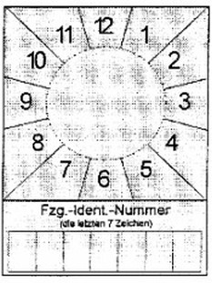
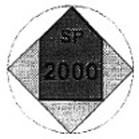

| 1 | Vorgeschriebene Beschaffenheit | ||
| 1.1 | Muster | ||
|  |  | ||
| SP-Schild | Prüfmarke | ||
| 1.2 | Abmessungen und Gestaltung | ||
| 1.2.1 | Prüfmarke | ||
| 1.2.1.1 | Allgemeines | ||
| Material: | Folie oder Festkörper aus Kunststoff | ||
| Kantenlänge der Prüfmarke: | 24,5 mm x 24,5 mm | ||
| Strichfarben: | schwarz | ||
| Schriftart: | Helvetica medium | ||
| Schriftfarbe: | schwarz. | ||
| 1.2.1.2 | Grundkörper von Prüfmarken, die als Festkörper ausgebildet sind | ||
| Durchmesser: | 35 mm | ||
| Höhe: | 3 mm | ||
| Farbe: | grau | ||
| Umrandung: | keine. | ||
| 1.2.1.3 | Fläche des Pfeiles: | ||
| Kantenlänge des Pfeilschaftes: | 17,3 mm x 17,3 mm | ||
| Kantenlänge der Pfeilspitze: | Basislinie: 17,3 mm | ||
| Seitenlinien: 12,2 mm | |||
| Farbe: | jeweils entsprechend dem Kalenderjahr, in dem die nächste Sicherheitsprüfung durchgeführt werden muss (Durchführungsjahr). Sie ist für das Durchführungsjahr 1999 – rosa 2000 – grün 2001 – orange 2002 – blau 2003 – gelb 2004 – braun. Die Farben wiederholen sich für die folgenden Kalenderjahre jeweils in dieser Reihenfolge. | ||
| Strichstärke der Umrandung: | 0,7 mm | ||
| Anordnung Text „SP“: | vertikal zentriert, Buchstabenunterkante 10 mm unter der Pfeilspitze | ||
| Schrifthöhe Text „SP“: | 4 mm | ||
| Anordnung Jahreszahl: | vertikal und horizontal zentriert | ||
| Schrifthöhe Jahreszahl: | 5 mm. | ||
| 1.2.1.4 | Restfläche: | ||
| Farbe: | grau | ||
| Umrandung: | keine. | ||
| 1.2.2 | SP-Schild | ||
| 1.2.2.1 | Allgemeines | ||
| Material: | Folie, Kunststoff oder Metall | ||
| Kantenlänge (Höhe x Breite): | 80 mm x 60 mm | ||
| Grundfarbe: | grau | ||
| Strichfarben: | schwarz | ||
| Schriftfarben: | schwarz. | ||
| 1.2.2.2 | Quadrat Monatsangabe | ||
| Kantenlänge: | 60 mm | ||
| Anordnung der Monatszahlen: | 1 bis 12 jeweils um 30 Grad im Uhrzeigersinn versetzt, an einem fiktiven Kreisring von 40 mm Durchmesser außen angesetzt | ||
| Schriftart: | Helvetica medium, zweistellige Zahlen in Engschrift | ||
| Schrifthöhe: | 5 mm | ||
| Linien zwischen den Monatszahlen: | sechs jeweils fiktiv durch den Mittelpunkt des Quadrates verlaufende, um 30 Grad versetzte Linien | ||
| Strichstärke: | 0,5 mm. | ||
| 1.2.2.3 | Kreisfläche | ||
| Beschaffenheit: | Damit die Prüfmarke von dem SP-Schild abgelöst werden kann, ohne dieses zu zerstören, sollte die Kreisfläche mindestens 1 mm positiv erhaben sein. | ||
| Anordnung Mittelpunkt: | auf den Mittelpunkt des Quadrates (Monatsangabe) zentriert | ||
| Innendurchmesser: | 35 mm | ||
| Umrandung: | keine | ||
| Grundfarbe: | grau. | ||
| 1.2.2.4 | Feld, „Fzg.-Ident.-Nummer“ | ||
| Anordnung: | je 2 mm Abstand zur seitlichen und unteren Außenkante | ||
| Kantenlänge (Höhe x Breite): | 12 mm x 56 mm | ||
| Einzelfelder (Höhe x Breite): | 7 Felder, 12 mm x 8 mm | ||
| Strichstärke: | 0,5 mm | ||
| Schrift: | Helvetica medium | ||
| Schrifthöhe („Fzg.- Ident.-Nummer“): | 3 mm | ||
| Schrifthöhe („die letzten 7 Zeichen“): | 2 mm. | ||
| Bei Ausführung des SP-Schildes als Folie muss das Feld nach der Beschriftung mit einer zusätzlichen Schutzfolie gesichert werden. | |||
| 1.2.3 | Farbtöne der Beschriftung und des Untergrundes | ||
| Farbregister RAL 840 HR, herausgegeben vom RAL Deutsches Institut für Gütesicherung und Kennzeichnung e. V., Siegburger Straße 39, 53757 St. Augustin. | |||
| Als Farbton ist zu verwenden: | schwarz | – RAL 9005 | |
| braun | – RAL 8004 | ||
| rosa | – RAL 3015 | ||
| grün | – RAL 6018 | ||
| gelb | – RAL 1012 | ||
| blau | – RAL 5015 | ||
| orange | – RAL 2000 | ||
| grau | – RAL 7035. | ||
| 1.2.4 | Dauerbeanspruchung | ||
| Prüfmarke und SP-Schild müssen so beschaffen sein, dass sie für die Dauer ihrer Gültigkeit den Beanspruchungen beim Betrieb des Fahrzeugs standhalten. | |||